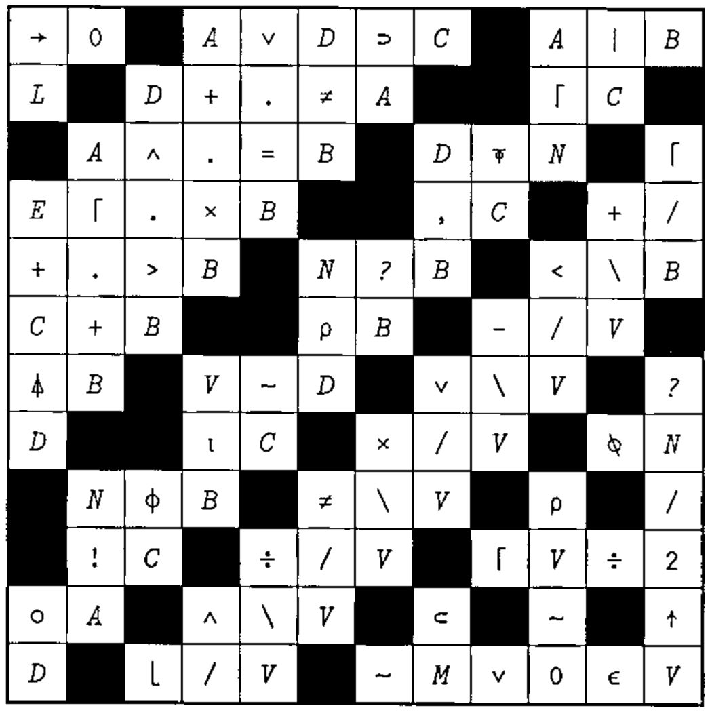
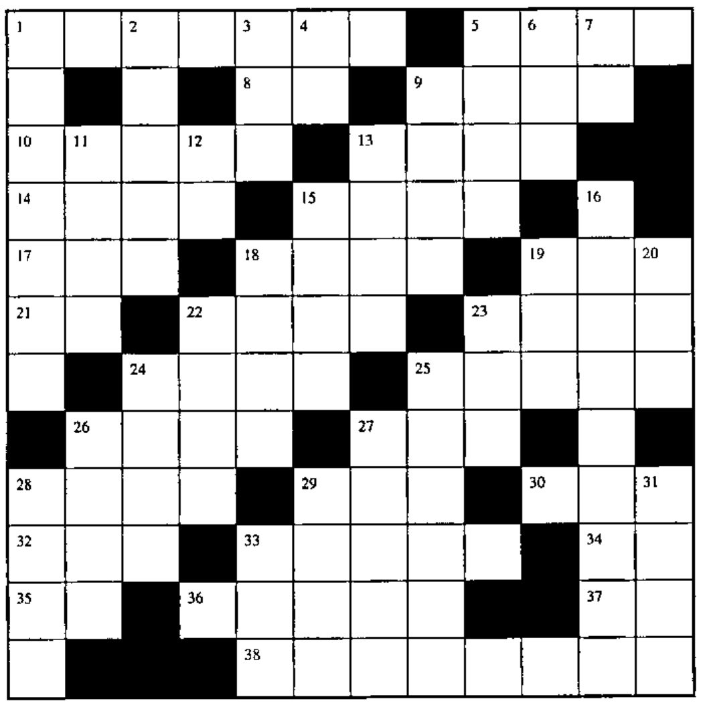

Solution and New Crossword
Vector 18:2, page 47
Transcribed from the printed issue; not yet reviewed. Read it in the PDF of the issue, page 47
Solution to Crossword in 18.1¶

Crossword for Vector 18.2¶

Across¶
- For each number in B, the number of numbers in vector L larger than it
- The values of B, capped at 3 and rounded up to the next integer
- Same as
1↑on an empty vector - Cosine of (pi times R) radians
*/TAB,25 .5for scalar TAB- Remainder when the absolute value of D is divided by N
+/-R- Where in V are the integers from 1 to T?
V-G×⌊V÷G- Number of possible combinations of
×/⍳Nobjects taken 3 at a time - Branch to the line labelled V1
- e to the power T
- Shape of
A∘.×A - 5 10 15 20 in origin 1
- 2 if P>0; 0 if P=0
- 3 random numbers from
⍳NV4 (~A∊~B)/A- Same as 27 Down
- Is T a scalar?
- Stick a column of 2s on the right of matrix M
~Ffor Boolean F- Rank of A
- Set K as
Z[4+⍳(⍴Z)-4] - 1 2 3 ... I
- Increase the depth of T by 1
- Indices of the 1 bits in B
- Length of V
10*+/4⍴VEfor VE a scalar
Down¶
- Cumulative sum of the difference between T and G times itself
B×Vwhere B is a Boolean vector, without×÷5×÷5×.05- First true
- Tangent of the magnitude of T radians
- Circumference of a circle of diameter D, rounded up to the next integer
|(-R)-1|-RN⍴⎕IO,~⎕IOfor N a scalar((T×T)*.5)+A×/R⍴e(the mathematical constant e)- Where in vector N is A factorial?
- Number of ways the elements of vector P can be combined in sets of V elements
- Flag each distinct value in V when it first occurs
- Sign (
¯1,0,1) of the first three elements of matrix B - Exit the function if N=0; restart it if N>0
×/2 3*2*2 1- 2 if T=0; 0 if T=1
- Shuffle the numbers
⍳5 ⍳0if A is nested (one deep); else 2B0[2+⍳3]- Is A the shape of T?
- Same as 27 Across
- An empty vector for which
⍴⎕IO⊃1↑returns⍴M - Set M as
0⍴0 - 2+3
(+/K)⍴1